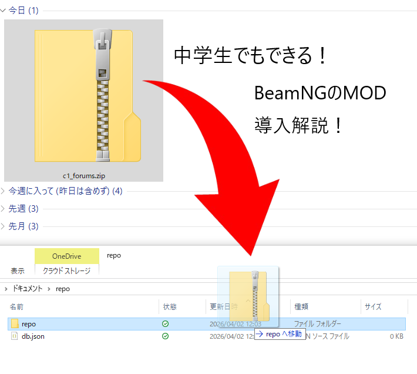

BeamNGdriveのmod入れ方解説!
どうも皆さんこんにちは nyakorと申します。BeamNGのmodの入れ方をわかりやすく写真付きで解説していきます!BeamNGには5万個くらいmodがあって日本のmodもあるのでぜひやってみてください。

BeamNGdriveのmodの入れ方↓
まずはmodをインストールします。webからならまずbeamng modとしらべてこのサイトを開きます。

そうしたら入って右上に検索窓があるので検索したい人は検索してください。
検索したら画像の赤いところを押します。

そうしたら既読するというところがあるので押します。そうすればmodをダウンロードできます。

次はダウンロードしたmodをBeamNGに入れる方法を紹介します。
メニュー画面のリポジトリを押します。

そしたら画面左上のmodマネージャーを押してください。

そうしたらmodフォルダを開くを押してフォルダを開きます。

ダウンロードフォルダとBeamnNGのmodフォルダを画面においてダウンロードされたzipファイルをrepoに移動します。(zipファイルは解凍せずにそのまま入れてください。)

これでwebからのmodの導入は完了です。初めてやったときは30分かかりました💦ゲーム内のリポジトリからmodが入っているか確認してみてください。
最後にゲーム内からのmodの導入方法を紹介します。
まずはメニューのリポジトリを押します。
リポジトリ内のmodの青色のプラスを押したらmod導入完了です。ゲーム内からのほうが簡単ですね。アイコン押すとmodの内容がわかります。画面右にはカテゴリーの欄があったり検索窓があったりするのでお目当てのmodをサクッと見つけれそうですね!

どうだったでしょうか。今回の記事はBeamNGのmodの入れ方解説でした。わかりやすかったでしょうか？BeamnGのレビューのリンクとsteamのリンク張っときます!最後まで見てくれてありがとうございました。よい一日を！

前回の記事でレビューしたBeamNG driveです。 まだ見てない方はぜひご覧ください。
画像引用先:steam
ホームに戻る